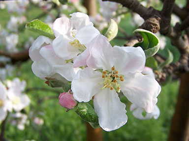

| Name | Colour | Size | Texture/Taste |
|---|---|---|---|
| Apple | Green | Medium | Crispy |
| Orange | Orange | Large | Sweet |
| Lemon | Yellow | Small | Tangy |
| Banana | Yellow | Large | Soft |
Name Apple Orange Lemon Banana Colour and Size Green Medium Orange Large Yellow Small Yellow Large Texture/Taste Crispy Sweet Tangy Soft

The apple tree (Malus pumila, commonly and erroneously called Malus domestica) is a deciduous tree in the rose family best known for its sweet, pomaceous fruit, the apple. It is cultivated worldwide as a fruit tree, and is the most widely grown species in the genus Malus. The tree originated in Central Asia, where its wild ancestor, Malus sieversii, is still found today. Apples have been grown for thousands of years in Asia and Europe, and were brought to North America by European colonists. Apples have religious and mythological significance in many cultures, including Norse, Greek and European Christian traditions.
Apple trees are large if grown from seed. Generally apple varieties are propagated by grafting onto rootstocks, which control the size of the resulting tree. There are more than 7,500 known cultivars of apples, resulting in a range of desired characteristics. Different cultivars are bred for various tastes and uses, including cooking, eating raw and cider production. Trees and fruit are prone to a number of fungal, bacterial and pest problems, which can be controlled by a number of organic and non-organic means. In 2010, the fruit's genome was sequenced as part of research on disease control and selective breeding in apple production.
Worldwide production of apples in 2013 was 80.8 million tonnes, with China accounting for 49% of the total.

The orange (specifically, the sweet orange) is the fruit of the citrus species Citrus � sinensis in the family Rutaceae.
The fruit of the Citrus � sinensis is considered a sweet orange, whereas the fruit of the Citrus � aurantium is considered a bitter orange. The sweet orange reproduces asexually (apomixis through nucellar embryony); varieties of sweet orange arise through mutations.
The orange is a hybrid, between pomelo (Citrus maxima) and mandarin (Citrus reticulata). It has genes that are ~25% pomelo and ~75% mandarin;however, it is not a simple backcrossed BC1 hybrid, but hybridized over multiple generations. The chloroplast genes, and therefore the maternal line, seem to be pomelo. The sweet orange has had its full genome sequenced. Earlier estimates of the percentage of pomelo genes varying from ~50% to 6% have been reported.Sweet oranges were mentioned in Chinese literature in 314 BC. As of 1987, orange trees were found to be the most cultivated fruit tree in the world. Orange trees are widely grown in tropical and subtropical climates for their sweet fruit. The fruit of the orange tree can be eaten fresh, or processed for its juice or fragrant peel. As of 2012, sweet oranges accounted for approximately 70% of citrus production.

In 2013, 71.4 million metric tons of oranges were grown worldwide, production being highest in Brazil and the U.S. states of Florida and California.

The lemon (Citrus � limon) is a species of small evergreen tree native to Asia.
The tree's ellipsoidal yellow fruit is used for culinary and non-culinary purposes throughout the world, primarily for its juice, which has both culinary and cleaning uses. The pulp and rind (zest) are also used in cooking and baking. The juice of the lemon is about 5% to 6% citric acid, which gives a sour taste. The distinctive sour taste of lemon juice makes it a key ingredient in drinks and foods such as lemonade and lemon meringue pie.
The origin of the lemon is unknown, though lemons are thought to have first grown in Assam (a region in northeast India), northern Burma or China. A study of the genetic origin of the lemon reported it to be hybrid between bitter orange (sour orange) and citron.
Lemons entered Europe near southern Italy no later than the first century AD, during the time of Ancient Rome. However, they were not widely cultivated. They were later introduced to Persia and then to Iraq and Egypt around 700 AD. The lemon was first recorded in literature in a 10th-century Arabic treatise on farming, and was also used as an ornamental plant in early Islamic gardens. It was distributed widely throughout the Arab world and the Mediterranean region between 1000 and 1150.

In 2013, world production of lemons (data combined with limes) was 15.42 million tonnes, led by India, Mexico and China as the main producers (table). Argentina and Brazil also had significant production.

The banana is an edible fruit, botanically a berry,[1][2] produced by several kinds of large herbaceous flowering plants in the genus Musa.[3] In some countries, bananas used for cooking may be called plantains, in contrast to dessert bananas. The fruit is variable in size, color and firmness, but is usually elongated and curved, with soft flesh rich in starch covered with a rind which may be green, yellow, red, purple, or brown when ripe. The fruits grow in clusters hanging from the top of the plant. Almost all modern edible parthenocarpic (seedless) bananas come from two wild species � Musa acuminata and Musa balbisiana. The scientific names of most cultivated bananas are Musa acuminata, Musa balbisiana, and Musa � paradisiaca for the hybrid Musa acuminata � M. balbisiana, depending on their genomic constitution. The old scientific name Musa sapientum is no longer used.
Musa species are native to tropical Indomalaya and Australia, and are likely to have been first domesticated in Papua New Guinea.[4][5] They are grown in 135 countries,[6] primarily for their fruit, and to a lesser extent to make fiber, banana wine and banana beer and as ornamental plants.
Worldwide, there is no sharp distinction between "bananas" and "plantains". Especially in the Americas and Europe, "banana" usually refers to soft, sweet, dessert bananas, particularly those of the Cavendish group, which are the main exports from banana-growing countries. By contrast, Musa cultivars with firmer, starchier fruit are called "plantains". In other regions, such as Southeast Asia, many more kinds of banana are grown and eaten, so the simple two-fold distinction is not useful and is not made in local languages.
The term "banana" is also used as the common name for the plants which produce the fruit.[3] This can extend to other members of the genus Musa like the scarlet banana (Musa coccinea), pink banana (Musa velutina) and the Fe'i bananas. It can also refer to members of the genus Ensete, like the snow banana (Ensete glaucum) and the economically important false banana (Ensete ventricosum). Both genera are classified under the banana family, Musaceae.

Statistics on the production and export of bananas and plantains are available from the Food and Agriculture Organization. Some countries produce statistics which distinguish between bananas and plantains, but two of the top three producers (India and China) do not, so comparisons can only be made using the total for bananas and plantains combined. The 2012 statistics show that India led the world in banana production, producing around 18% of the worldwide crop of 139 million metric tonnes. Philippines was the next largest producer with around 7% of the worldwide crop. Its national data does distinguish between bananas and plantains, and shows that the latter made up over 95% of production. Ten countries produced around two thirds of the total world production.
[1] "Banana from 'Fruits of Warm Climates' by Julia Morton". Hort.purdue.edu. Archived from the original on 2009-04-15. Retrieved 2009-04-16.
[2] "Identification Of Major Fruit Types". Wayne's Word: An On-Line Textbook of Natural History. Retrieved 2013-08-17.
[3] "Banana". Merriam-Webster Online Dictionary. Retrieved 2013-01-04.
[4] "Tracing antiquity of banana cultivation in Papua New Guinea". The Australia & Pacific Science Foundation. Archived from the original on 2007-08-29. Retrieved 2007-09-18.
[5] Nelson, Ploetz & Kepler 2006.
[6]"Where bananas are grown". ProMusa. 2013. Retrieved 24 October 2016.